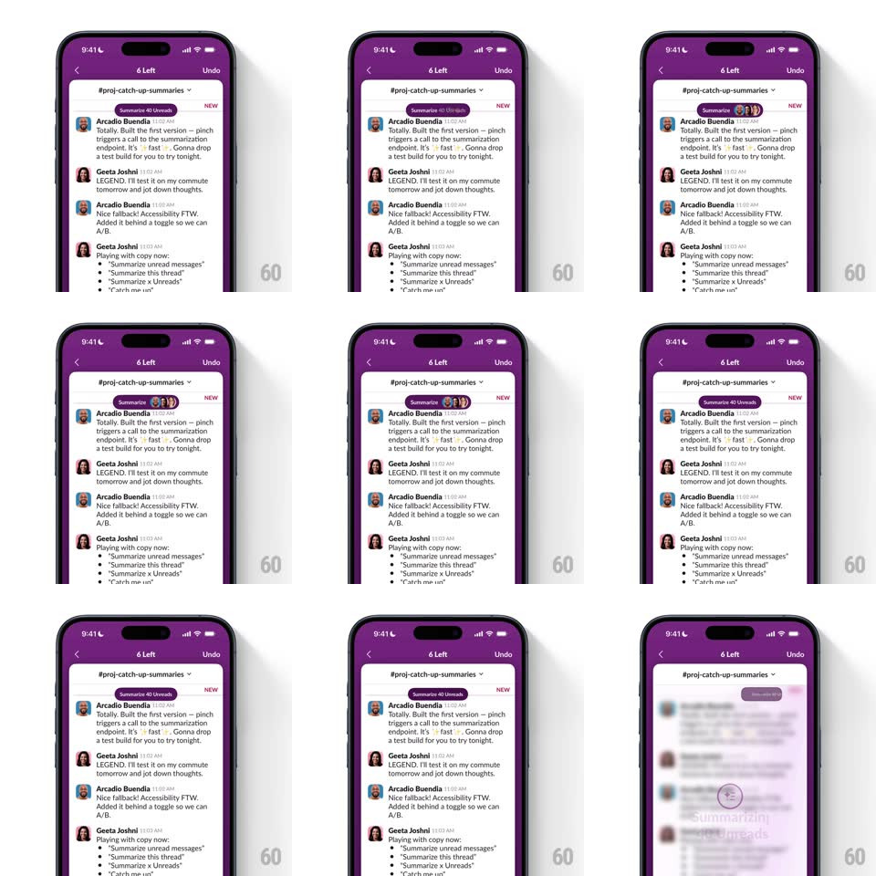

Media
Frame-by-frame

Rebuild this interaction 1:1: Slack's summarize pill - a purple pill button pops in over the channel header with a spring and morphs between its "Summarize N Unreads" text state and a compact stacked-avatars state.

Rebuild this interaction 1:1: Slack's summarize pill - a purple pill button pops in over the channel header with a spring and morphs between its "Summarize N Unreads" text state and a compact stacked-avatars state. ## Integration Integration: stack-agnostic spec - springs given as stiffness/damping, timed motions as duration + curve; map every value to your framework and animation library of choice. ## Scene Slack's dark purple mobile channel (#proj-catch-up-summaries, "6 Left" in the header): a floating pill sits over the top of the message list, alternating between showing "Summarize 40 Unreads" with a sparkle icon and a compact row of overlapping sender avatars. ## Motion spec Pattern: springy pill pop + width morph between content states, ~600ms per morph. - Entrance: the pill scales in from 0.5 to 1.08 to 1 (spring ~340/16, 400ms) anchored to its center, with a quick fade. - Morph: the pill's width animates between the text state and the avatar state (spring ~380/22, 350ms) while contents crossfade (150ms): the label collapses as three overlapping avatar circles (negative spacing ~8px) slide in from the leading edge. - The avatar stack staggers in (40ms per avatar, leading to trailing) with a tiny scale pop each (0.8 -> 1, spring ~420/18). - The pill floats above scrolled content with a soft shadow; messages scroll beneath it without pushing it. ## Calibration - Width animates with the spring, not a linear stretch - the pill should feel like one object changing shape. - Exactly one content state fully visible at a time. ## Reduced motion Instant state swap with a 150ms fade, no pop. ## Don't miss - The sparkle icon leads the text state; the avatar stack keeps the same pill padding. - The count in the label matches the actual unread count.